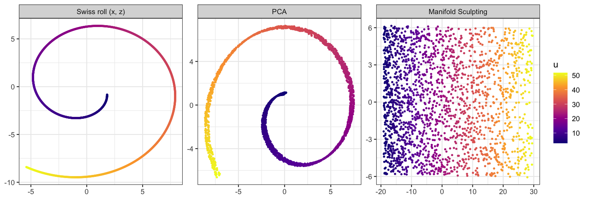

manifoldsculpting implements Manifold Sculpting (Gashler, Ventura and Martinez, 2008), an iterative nonlinear dimensionality reduction method, with a fast C++ engine and a recipes step for the tidymodels ecosystem.
Manifold Sculpting records the distances and angles between each point and its nearest neighbors, then gradually scales the data out of the dimensions to be removed, while moving the points in the dimensions that remain to restore these local relationships, as if surface tension were acting on the manifold. Because it preserves distances, the embedding keeps the scale of the data, and the points stay spread evenly across the manifold.
Features
-
manifold_sculpting(): the algorithm of the paper, following the reference implementation of its authors in the Waffles library. All the dimensions of the data are kept during the iterations (as the paper asks) at the cost of the preserved ones only, and several runs can be made (nstart) to avoid folded embeddings. -
predict(): embeds new samples by solving the same local problem against the training embedding, so the method can be used on test data. -
step_manifold_sculpting(): a recipes step, with tunablenum_comp,neighborsandsquishing_rate. - A C++ engine (RcppArmadillo): exact nearest neighbor search with a k-d tree or BLAS, and the sculpting iterations.
-
sim_swiss_roll()andsim_s_curve(): the test manifolds of the paper, with their intrinsic coordinates. - A comparison with Isomap, LLE, t-SNE, UMAP, nonlinear PCA and kernel PCA (
vignette("comparison")). - A spectroscopy example on the NIR spectra of meat, with the tidyverse and tidymodels (
vignette("spectroscopy")).
Installation
Install the development version as a prebuilt binary from r-universe, which needs no compiler:
install.packages(
"manifoldsculpting",
repos = c("https://christiangoueguel.r-universe.dev", "https://cloud.r-project.org")
)Or build it from GitHub with:
# install.packages("pak")
pak::pak("ChristianGoueguel/manifold-sculpting")Example
The Swiss roll is a two-dimensional sheet rolled up in three dimensions. Its intrinsic coordinates, u (along the roll) and v (across it), are known.
library(manifoldsculpting)
set.seed(42)
roll <- sim_swiss_roll(2000)
roll
#> # A tibble: 2,000 × 5
#> x y z u v
#> <dbl> <dbl> <dbl> <dbl> <dbl>
#> 1 1.82 4.98 -0.832 2.96 4.98
#> 2 1.82 5.24 -0.841 2.97 5.24
#> 3 1.82 -2.57 -0.850 2.98 -2.57
#> 4 1.82 3.97 -0.859 2.98 3.97
#> 5 1.82 1.70 -0.868 2.99 1.70
#> 6 1.82 0.229 -0.877 3.00 0.229
#> 7 1.82 2.84 -0.886 3.01 2.84
#> 8 1.82 -4.38 -0.895 3.02 -4.38
#> 9 1.82 1.88 -0.904 3.03 1.88
#> 10 1.82 2.46 -0.913 3.04 2.46
#> # ℹ 1,990 more rows
set.seed(1)
fit <- manifold_sculpting(roll[c("x", "y", "z")], ndim = 2, neighbors = 20, nstart = 3)
fit
#> Manifold Sculpting embedding
#> * 2000 samples, 3 variables to 2 dimensions
#> * 20 neighbors, squishing rate 0.99
#> * 746 iterations (converged), final error 0.01363
#> * Best of 3 runs, with final errors 0.01363, 0.0142, 192.8One of the three runs ended with a much larger error: it left part of the roll folded, and was discarded. PCA flattens the roll onto itself, while Manifold Sculpting unrolls it (the points are colored by their position along the roll, and the embedding is rotated onto its principal axes for display):

The embedding matches the intrinsic coordinates up to a rotation, with no rescaling needed:
Embedding new samples
Manifold Sculpting has no explicit mapping from the data to the embedding. predict() places each new sample at the combination of the embeddings of its nearest training samples given by its locally linear reconstruction weights, then moves it to minimize the Manifold Sculpting error against these neighbors. Training samples get their embedding back.
set.seed(2)
idx <- sample(nrow(roll), 1500)
train <- roll[idx, ]
test <- roll[-idx, ]
set.seed(3)
fit_train <- manifold_sculpting(train[c("x", "y", "z")], nstart = 3)
head(predict(fit_train, test))
#> MS1 MS2
#> [1,] -4.546955 -19.37233
#> [2,] -5.663599 -18.74245
#> [3,] -7.651568 -17.63838
#> [4,] -6.643554 -18.17561
#> [5,] -6.805621 -18.03481
#> [6,] -4.456182 -19.27834With recipes
step_manifold_sculpting() adds the embedding to a recipe. The training set gets the embedding found by the algorithm, and new data are embedded with predict(). Since the method works on Euclidean distances, the predictors should usually be normalized first.
library(recipes)
rec <- recipe(~ x + y + z, data = train) |>
step_manifold_sculpting(all_numeric_predictors(), num_comp = 2,
neighbors = 20, options = list(nstart = 3), seed = 1)
rec_trained <- prep(rec)
rec_trained
bake(rec_trained, new_data = test)
#> # A tibble: 500 × 2
#> MS1 MS2
#> <dbl> <dbl>
#> 1 -16.8 -10.6
#> 2 -17.2 -9.37
#> 3 -17.8 -7.19
#> 4 -17.5 -8.28
#> 5 -17.5 -8.07
#> 6 -16.7 -10.6
#> 7 -16.9 -9.37
#> 8 -17.3 -8.23
#> 9 -16.6 -10.2
#> 10 -17.6 -6.76
#> # ℹ 490 more rowsnum_comp, neighbors and squishing_rate can be tuned with the tune package.
Choosing the parameters
-
neighbors: the main parameter. With too few neighbors, the embedding is more likely to fold onto itself, and convergence is slower; neighborhoods that are too large cut across the folds of the manifold. The default, 20, is the value of the paper for the S-curve. -
nstart: like any local optimization, a run can end in a local minimum, where part of the manifold is folded over another. Such runs have a much larger final error, so the best of several runs is reliable. On the Swiss roll above, about one run in seven with 20 neighbors stays folded, while the best of three runs unrolled it in all of our 16 trials. -
squishing_rate: the factor by which the dimensions to remove are scaled down at each iteration (0.99 in the paper). Slower squishing (closer to 1) takes more iterations.
Performance
The iterations work on the ndim preserved dimensions only, whatever the number of variables. Unfolding the 2000-point Swiss roll takes about 2 seconds per run on a laptop (Apple M-series), similar to the C++ implementation of Waffles. The nearest neighbor search uses a k-d tree for data with up to 10 variables, and blocked BLAS cross-products otherwise, so it benefits from an optimized BLAS.
References
Gashler, M., Ventura, D. and Martinez, T. (2008). Iterative non-linear dimensionality reduction with manifold sculpting. In Advances in Neural Information Processing Systems 20, 513–520. https://proceedings.neurips.cc/paper/2007/hash/c06d06da9666a219db15cf575aff2824-Abstract.html
Gashler, M. S. (2011). Waffles: A machine learning toolkit. Journal of Machine Learning Research, 12, 2383–2387.
Roweis, S. T. and Saul, L. K. (2000). Nonlinear dimensionality reduction by locally linear embedding. Science, 290, 2323–2326.
Acknowledgments
The C++ engine follows the reference implementation of Manifold Sculpting in Waffles by Mike Gashler and contributors, which is dedicated to the public domain.